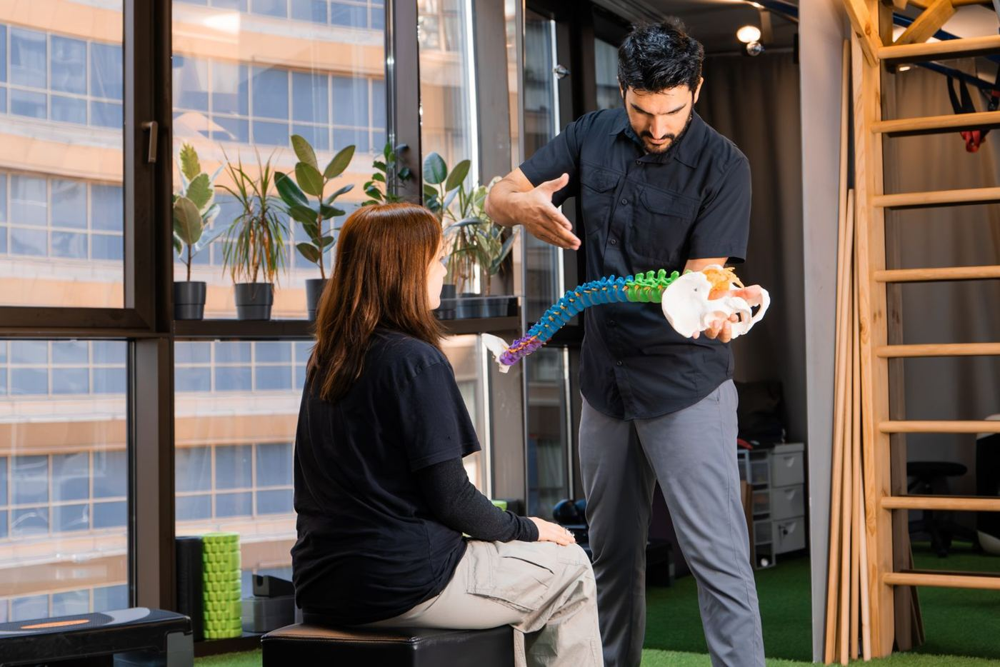

Why Understanding the Biomechanics Matters
Most patients who come to our office after a motor vehicle accident arrive with a set of symptoms — neck pain, headaches, shoulder tension — but without a clear picture of what actually happened to their spine in the seconds the collision occurred. That gap between experience and explanation is one of the most frustrating parts of recovering from an auto injury. When patients understand the mechanics involved, they are better positioned to understand why they feel the way they do, what a thorough evaluation should include, and what the clinical findings mean.
This article is not a substitute for evaluation by a qualified clinician. It is a summary of what the peer-reviewed literature tells us about spinal mechanics during motor vehicle collisions, written for patients, families, and referring professionals who want to understand the science behind the symptoms.
The Physics of a Collision: Energy Transfer and Delta-V
Every motor vehicle collision involves a rapid transfer of kinetic energy. The key variable that determines how much force the human body must absorb is delta-v — the change in velocity experienced by the occupant's vehicle during the impact event. Even relatively low delta-v collisions can generate meaningful biomechanical stress on cervical structures.
In a rear-impact scenario — by far the most studied collision type in the whiplash literature — the struck vehicle accelerates forward while the occupant's torso, supported by the seat, follows that movement. The head, however, lags behind due to inertia. This produces a differential motion between the torso and the head that the cervical spine must accommodate in a very short time window: typically 150 to 300 milliseconds, faster than the voluntary neuromuscular system can respond.
Clinical note: The involuntary nature of cervical motion during collision is one reason pre-bracing does not fully protect the cervical spine. By the time a driver perceives impact and initiates a protective muscle response, the critical loading phase has already begun.
Head restraint position also plays a significant role. Research has consistently shown that a properly positioned head restraint — adjusted to align with the center of mass of the head — reduces the magnitude of cervical hyperextension. A lower-positioned or absent restraint allows greater rearward displacement of the head before contact, increasing both the range of motion and the acceleration experienced by cervical structures.

The Cervical Acceleration-Deceleration Sequence
The term "whiplash" is colloquially understood, but the clinical literature uses the more precise phrase cervical acceleration-deceleration (CAD) to describe the injury mechanism. This sequence occurs in two distinct phases.
Phase One: Hyperextension
In the initial phase of a rear impact, the occupant's torso is accelerated forward by the seat back while the head continues rearward relative to the body. This causes the lower cervical spine to extend — a motion the structure is designed to accommodate within normal ranges. However, under collision-speed dynamics, the lower cervical segments can move into extension while the upper cervical segments simultaneously flex, creating an S-shaped curvature that does not occur in normal range-of-motion movements. This atypical motion pattern is associated with shear stress at the facet joints and posterior ligamentous structures.
Phase Two: Rebound Hyperflexion
Following the extension phase, the head rebounds forward — the so-called "whip" of whiplash — moving into flexion. Depending on vehicle geometry, restraint systems, and individual anatomy, this rebound may carry the head through a range of forward motion that stresses the anterior cervical structures, including the anterior longitudinal ligament and disc annuli. The two-phase loading pattern exposes different anatomical structures to stress in rapid succession, which partly explains why post-accident symptom profiles are often complex and multi-focal.
Soft Tissue Injuries: What Gets Stressed and How
The cervical spine's stability depends on an integrated system of active (muscular) and passive (ligamentous, capsular) restraints. During a CAD event, multiple tissue types can be involved simultaneously.
Ligamentous Structures
The alar ligaments, transverse ligament, anterior and posterior longitudinal ligaments, and the facet joint capsules all contribute to cervical stability. Ligaments are viscoelastic: they respond differently to rapid loading than to slow loading. Under the high strain rates produced in a collision, ligament fibers can be stretched beyond their elastic limit, resulting in partial or complete disruption. Because ligaments are poorly vascularized, the healing process is slow, and incompletely healed ligamentous injury can result in abnormal intervertebral motion — a finding that standard static imaging may not detect.
Intervertebral Discs
Disc injury in cervical trauma is well documented in post-mortem and advanced imaging studies. The annulus fibrosus — the outer fibrous ring of the disc — is vulnerable to radial or circumferential tears under the shear and compressive loading of a CAD event. Disc injury can cause local pain, alter segmental mechanics, and, if the nucleus pulposus herniates, produce neurological symptoms through nerve root or cord compression.
Musculature
The deep cervical stabilizers — particularly the longus colli and longus capitis — are among the first structures affected in cervical trauma. Research by Jull and colleagues has documented that these muscles can become inhibited following injury, leading to recruitment of the larger, more superficial muscles as compensatory stabilizers. This altered neuromuscular pattern can perpetuate pain and dysfunction even after the initial tissue injury has healed.
Neurological Involvement: Headaches, Numbness, and Tingling
A significant proportion of patients who sustain cervical trauma report symptoms that extend beyond the neck and shoulder region: headaches originating at the base of the skull (cervicogenic headache), radiating arm pain, numbness or tingling in the hands, and cognitive symptoms including difficulty concentrating and sleep disturbance. These presentations have anatomical explanations.
Cervicogenic headache following trauma is often related to injury to the upper cervical joints (C0-C1-C2), the suboccipital musculature, and the greater occipital nerve — all of which can be stressed during the CAD sequence. Radicular symptoms suggest involvement of the cervical nerve roots, whether through disc herniation, foraminal narrowing secondary to joint inflammation and swelling, or direct root irritation. The cervical sympathetic chain, which runs in close proximity to the anterior cervical spine, can also be involved in trauma, contributing to symptoms such as visual disturbance, tinnitus, and dizziness that some patients report following motor vehicle injury.
Why Standard X-Rays May Not Show the Full Picture
A common source of confusion — and frustration — for patients is receiving a report that their X-rays are "normal" while continuing to experience significant symptoms. Standard static radiographs taken in a clinical setting capture the spine in a fixed position and cannot assess how the vertebral segments move relative to one another during functional motion.
Ligamentous injury, by definition, affects motion rather than static position. A ligament that has been stretched beyond its elastic limit may allow abnormal intervertebral translation or rotation that is only visible when the spine is in motion. This is where Digital Motion X-Ray (DMX) — a fluoroscopic technique that captures the spine during movement in real time — provides clinical information that cannot be obtained from standard films. DMX allows assessment of intersegmental motion patterns, translation, and angular relationships under functional load, providing objective documentation of findings that correlate with ligamentous instability.
MRI and CT each provide additional information: MRI is sensitive to disc, cord, and soft tissue pathology, while CT provides superior bony detail. A thorough evaluation following significant cervical trauma may appropriately include multiple imaging modalities depending on the clinical presentation.
The Importance of Early, Thorough Evaluation
The window immediately following a motor vehicle collision is clinically significant. Early evaluation serves several purposes: it establishes a baseline of findings, identifies injuries that require urgent care, creates a documented clinical record, and allows treatment to begin before adaptive compensatory patterns become established.
Research on whiplash outcomes consistently identifies early intervention as a favorable prognostic factor. Studies have demonstrated that patients who receive timely assessment and appropriate care generally have better functional outcomes than those who delay. This is not a commentary on any particular treatment modality — the evidence base supports a range of conservative approaches — but rather an observation that allowing an injured system to remain without evaluation increases the likelihood that compensation patterns, altered movement strategies, and secondary muscle tension will complicate the clinical picture over time.
If you have been involved in a motor vehicle collision and are experiencing any cervical, cranial, or upper extremity symptoms — or if you are not yet symptomatic but were involved in a significant impact — a clinical evaluation is a reasonable and prudent step. The goal of that evaluation should be to document what is present, identify what requires treatment, and establish a clear baseline for monitoring your recovery.